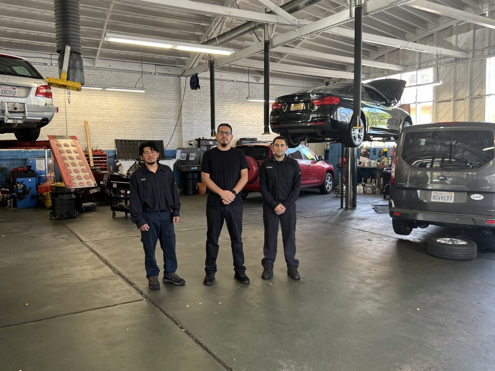
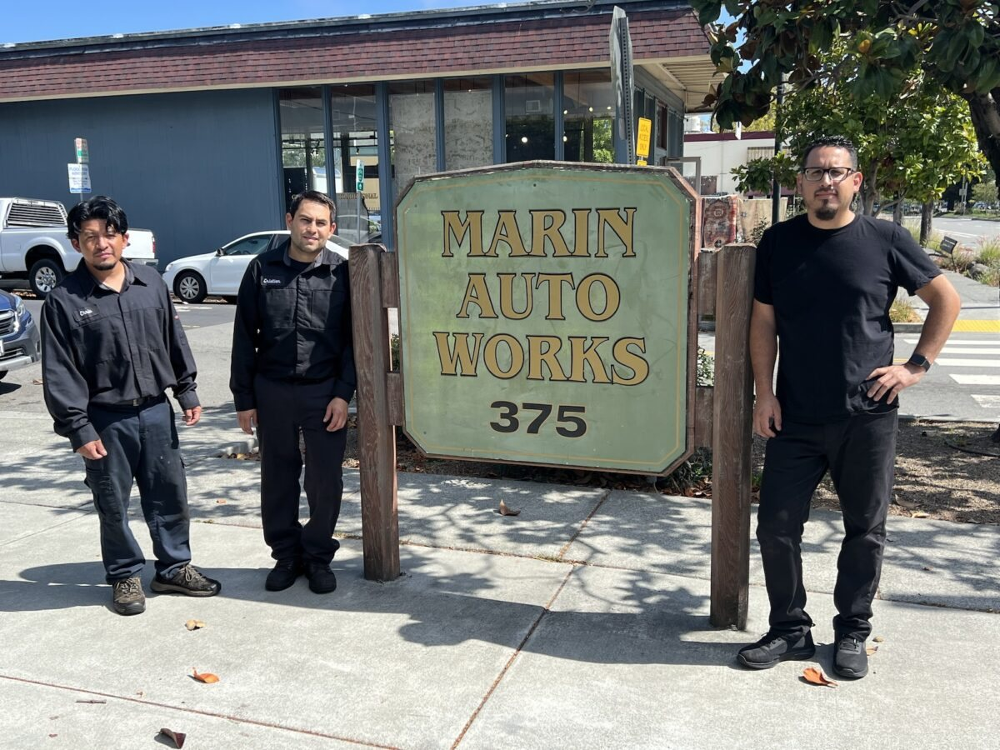

Start with
your business.
Complete a client profile and share your funding goals. Your advisor helps you work out where to begin.
New equipment. A bigger space. Room to grow. Work with a Finance Center advisor to explore your options and prepare for financing.
Talk to a funding advisorConfidential advising. No fee to you.


Turned down by the banks. Approved for a $503,000 SBA loan.
Chris Aguirre · Marin Auto Works · Mill Valley
$250M+
in working capital accessed by Finance Center clients
594+
businesses supported with funding
No fee.
Confidential.
Cumulative results since 2018, as reported by the Finance Center. Marin Auto Works results from its published client story.
Practical support with the preparation, the paperwork and the decisions along the way.
Complete a client profile and share your funding goals. Your advisor helps you work out where to begin.
Review your financials, build projections and prepare the information a lender will need.
Discuss financing options, prepare for lender conversations and understand the next steps.
Yes. SBDC advising is offered at no fee to you, with support from public funding and partners. Financing may have its own costs, which you should review with the lender.
We help you prepare for and pursue financing. Lenders and funders make the funding decisions; advising does not guarantee approval.
You can still ask for advising. Work through the feedback, review your financial position and discuss what to prepare before your next application.
SBDC advising is confidential. You can review how information is handled before completing your client profile.
Review the client intakeTiming depends on your business, the documents you have ready and the funding you pursue. Talk with your advisor about your situation and the next steps.
Start with your business and what you want to do.
NorCal SBDC helps businesses prepare for and pursue financing. Funding decisions are made by lenders and funders; advising does not guarantee approval.
Lender or partner? Contact the Finance Center team